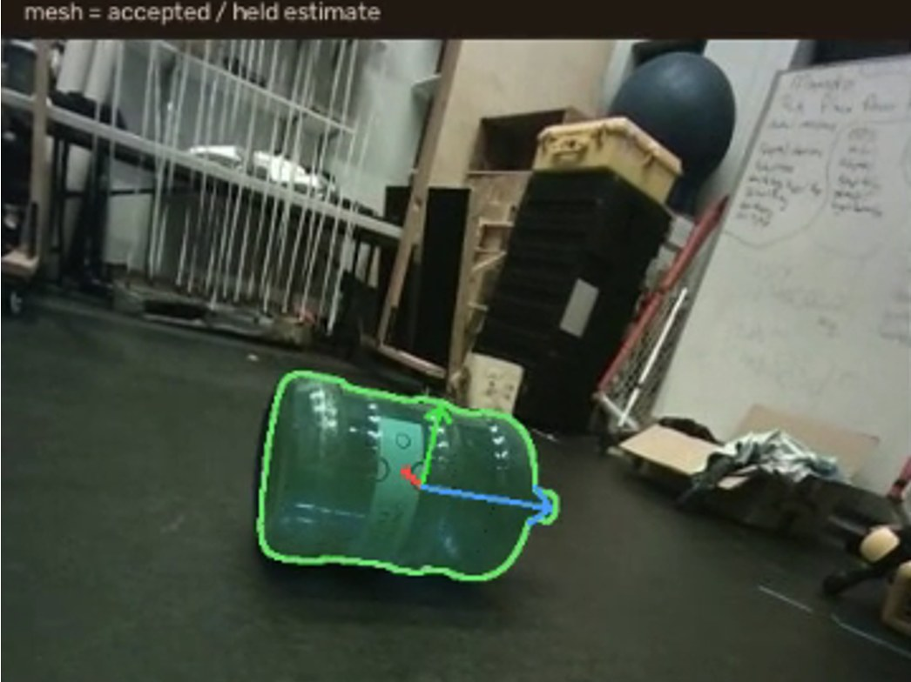
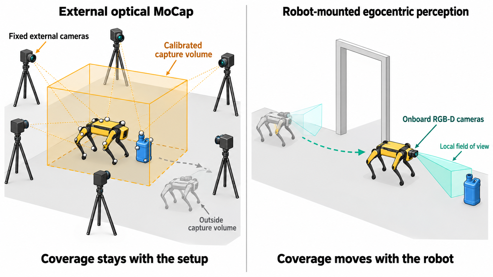
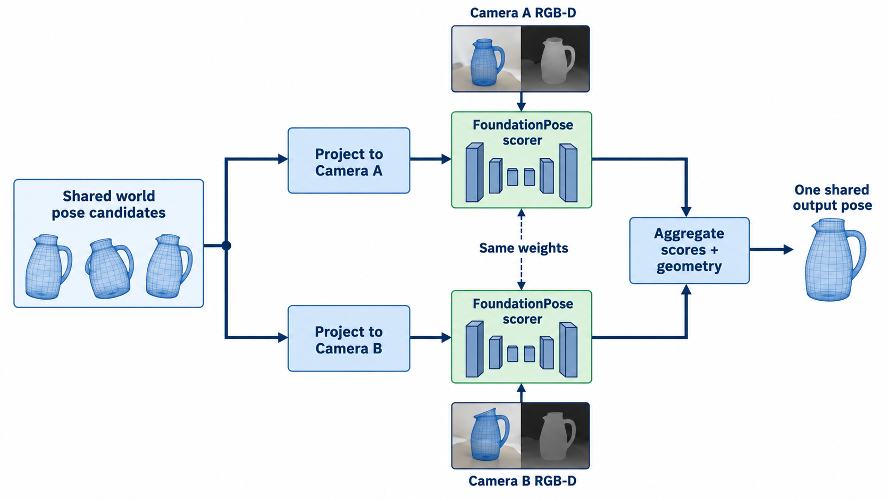

A Boston Dynamics Spot rolls a water jug to a clicked goal, running a reward that an LLM agent wrote. No demonstrations, no per-task training, no motion capture.

Spot's own cameras replace motion capture, so the planner's simulator stays in sync with the world outdoors. I built the deployment end to end.


The agent writes and debugs the reward. A person reviews it in plain words. Each revision is tested by rerunning the MPC, with no retraining.
I handed each stage of the pipeline to an LLM agent. It is good at writing programs that run in the loop, and inefficient at being the loop.
MuJoCo, privileged state, Sumo's tasks. Agent runs had no time limit; the three-way comparison shares 30 start states.
Skills the agent authors and MPC executes produce robot data with no human demonstrations, which can later train RL or VLA policies that run fully onboard.